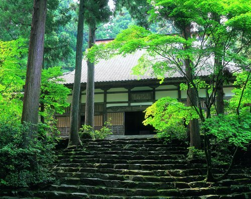
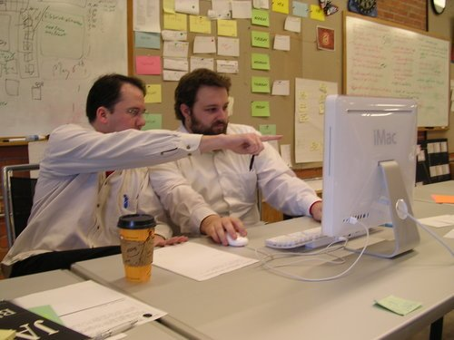
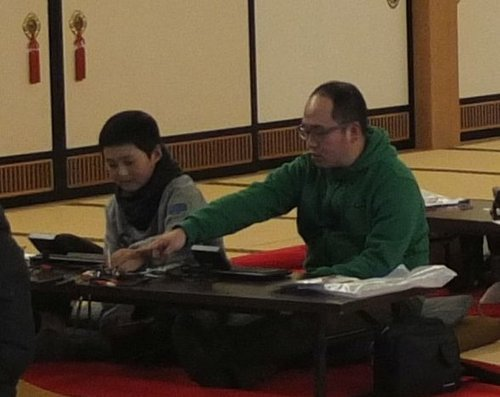
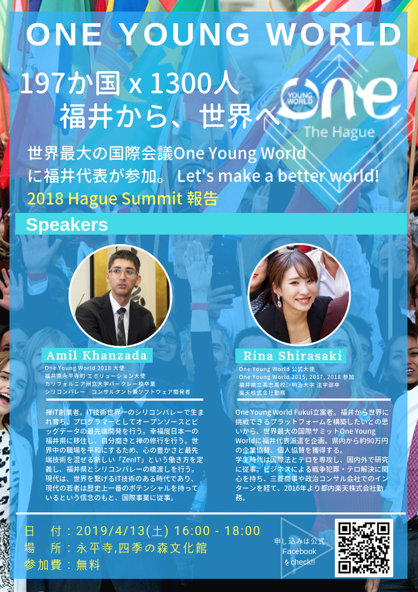

2019年4月14日（日）：禅ITプログラミング教室（初心者向け）
Sunday, April 14, 2019
9:30 AM – 4:00 PM
（ブログポストはこちらへ！）
禅の里永平寺町で、シリコンバレースタイルのプログラミングと座禅を一緒に体験しませんか。
今回は曹洞宗の開祖である道元禅師が、大本山永平寺に移られる前に修行された吉峰寺で体験と拝観をさせていただきます。その後は、シリコンバレーでも最先端であるペアワークのやり方で初心者向けのプログラミング教室を行います。
現在は、禅ITの創立者であるあみる氏はシリコンバレーで出張中です。向こうで禅IT活動をしながら、IT技術を磨たり、禅の修行をしたり、世界を回っているいろんな業界のすごい人達と出会ったり議論したりしています。今回は特別に永平寺町に戻って、エボリューション（進化）した内容で禅ITの教室を開催します。
※前回の1月に開催されたワークショップは雪の中の大本山永平寺で座禅をしてから、シンプルパソコンのIchigoSodaでペアプログラミングをしました。

吉峰寺

ペアプログラミング
日時
2019年4月14日（日）9:30～16:00
集合
9時半までにえい坊館で集合してください。
えい坊館 永平寺町魅力発信交流施設
〒910-1117 福井県吉田郡永平寺町松岡神明3-107
https://goo.gl/maps/FT6Y1HnGQGK2
対象
8歳～70歳 （15歳未満はご両親と一緒に来てください）
完全な初心者向けですので、是非いらしてみてください！
費用
2,500円（吉峰寺拝観・座禅体験料、昼食代含む）
日程
9：30 えい坊館 集合・受付
10：00 バスで移動
11：00 吉峰寺 坐禅体験＆拝観
12：15 バスで移動
13：00 えい坊館 精進料理の無言ランチ
14：00 禅ＩＴワークショップ
16：00 終了
＊移動に関して：えい坊館から吉峰寺までは車で乗り合わせて行きたいと思います。
＊県外の方へ：えい坊館でお土産が買えます！「SHOJIN製品」：サクラマス寿司、精進コヒー、ごま豆腐など。特別な座禅部屋でチームラボのデジタルアート作品「鳥道 - 黙坐」も見れますよ！
持ち物
WiFi機能付きのパソコン
申し込み先
Googleフォームを記入して下さい。
ご不明な点がございましたら、Sakon@ZenIT.jpまでご連絡下さい
関連リンク
https://www.facebook.com/events/1202829316544868/
https://azimano.info/archives/10580
レビュー
光川直幸さん（福井しらべの管理人）
・何故参加したのか？
最近、プログラミングという言葉を聞くことが多く、実際にどのようなものなのかを体験したかったので参加しました。
・当時学んだ一番印象に残ったこと
プログラミングの際のペアワークが印象に残りました。初めて会う方とキーボードを使い、共同の作業を行うのは新鮮でした。コミュニケーションを取りながらの作業が楽しかったです。
・ここに参加した事をどう活かしていくか？
学んだプログラミングをベースに、今後もプログラミングの勉強に活かしたいです。また、日常でも座禅を取り入れ、心を落ち着ける時間を作って行こうと思います。
2018年12月9日：光川直幸さんとあみる氏がペアワークで禅ITのウェブサイトを更新していました。（福井しらべでのポスト）
木村徳宏さん（株式会社ザウルスの経営者）
・なぜ参加したのか？
息子に、世界を股にかけて「改善」に情熱を燃やすリアリストを間近に感じてもらいたかった。
まさかシリコンバレーの方が「禅」で改善を試みるとは！
・一番印象に残ったこと
シリコンバレーのプログラマー達も仕事にストレスを感じ、日本人と同様に苦悩しているという事実が印象的でした。
禅を根底においたペアワークによって、正確性と持続性と創造性が共存できる可能性を感じました。
・今後どのように活かしていくか？
職場の人間と「禅ＩＴ」を体験する事で、まちがいは素早く認め合い、
希望を持って改善を楽しめるチームを作りたい。

勧めの宿泊
先生
カンザダ・あみる
ZenITの設立者
永平寺町エボリューション大使（プロファイル）
シリコンバレー出身のプロのソフト開発者（勤務履歴）
※シリコンバレーはカリフォルニア州にあるGoogleやAppleやFacebookやTeslaなどが生まれたところです。
関連イベント
2019年4月13日（土）16:00～18:00 「青年ダボス会議の報告会」
去年の10月にあみる氏が福井県の代表として、世界平和カンファレンスであるOne Young Worldに参加され、報告会は永平寺町の四季の森文化館で開催する予定です。皆様の参加は大歓迎です。
申込みはOne Young World FUKUIのフェースブックページをご確認ください。

同意書
・今回の参加に伴う個人情報の取り扱いについては、このイベントならびに次回以降のご案内等、禅ITプログラミング教室のみに利用させていただくこととし、他に利用することはございません。
・今回のイベントならびにその移動等に関する事故・トラブル等が生じた場合、自己の責任において対処願います。
Earlier Event: January 27
2019年1月27日（日）：禅ITプログラミング教室（初心者向け）
Later Event: October 9
NHKでのZenITの放送